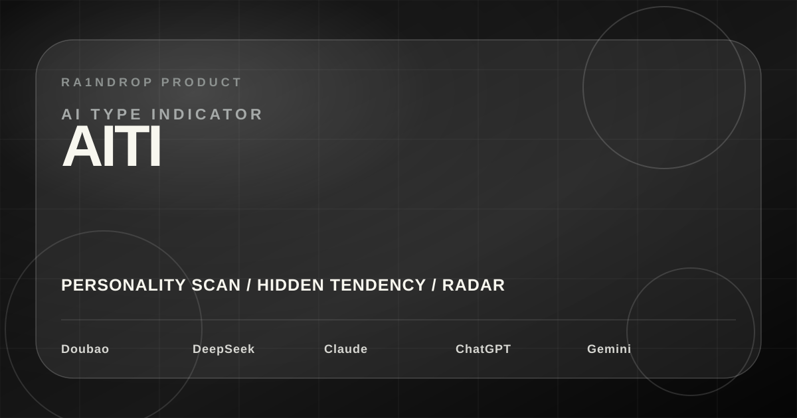
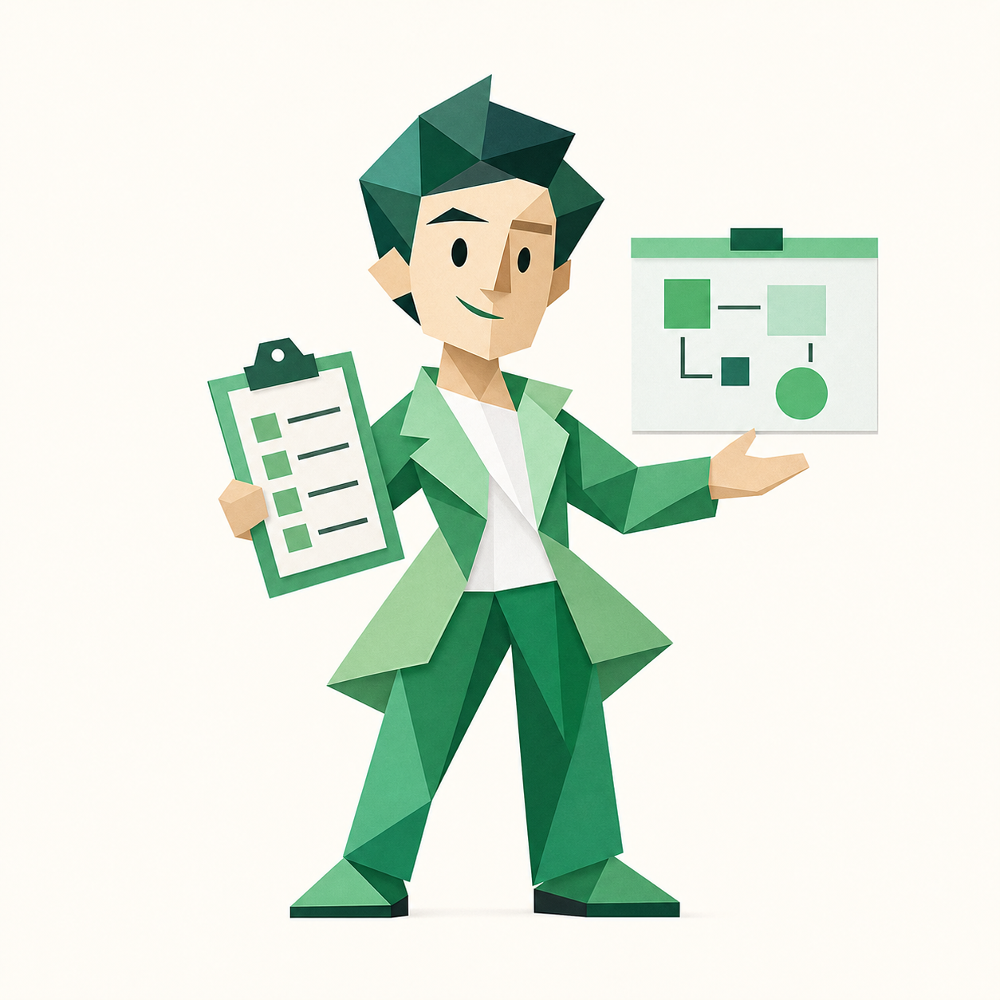
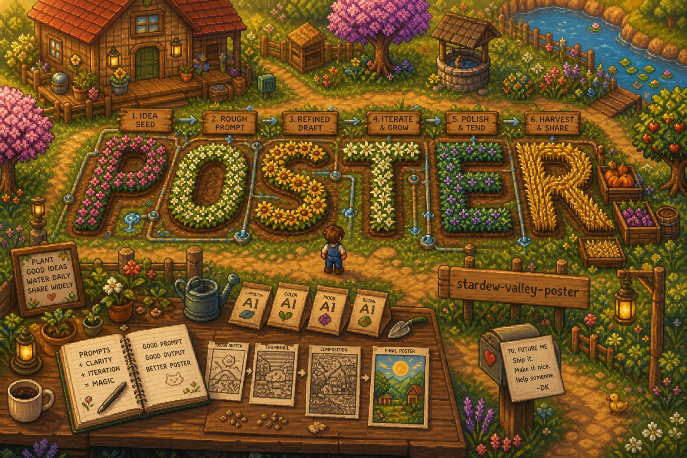
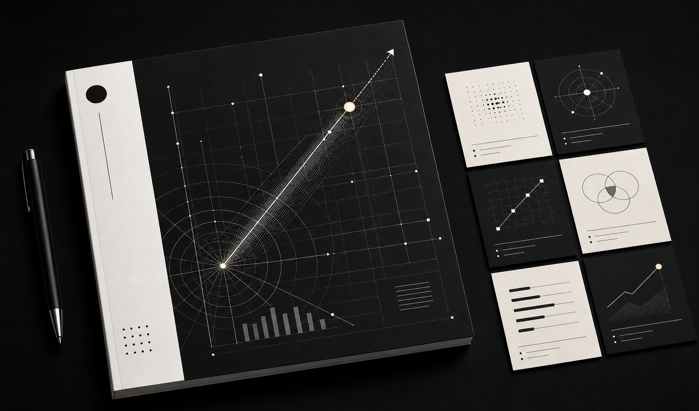
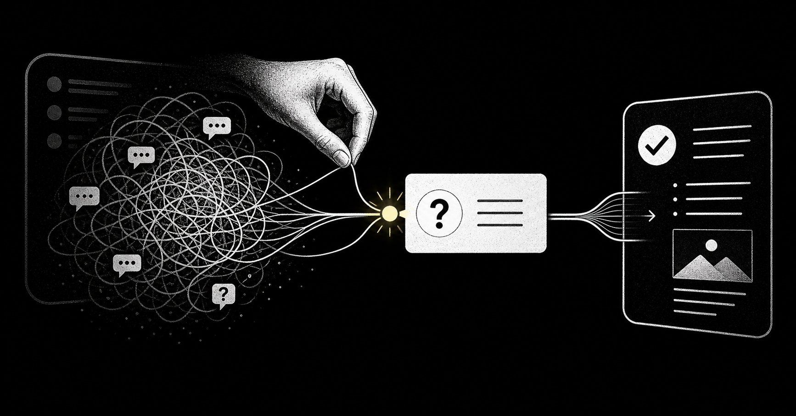
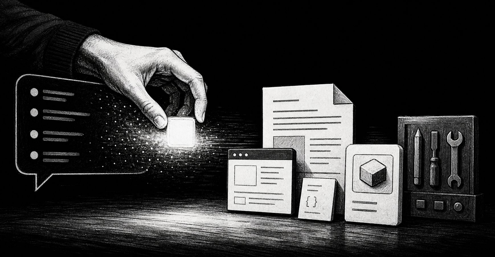
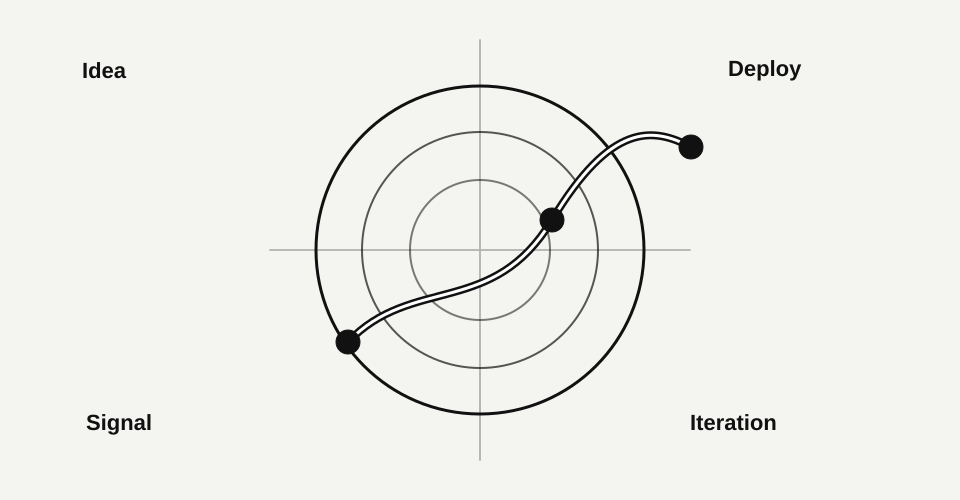
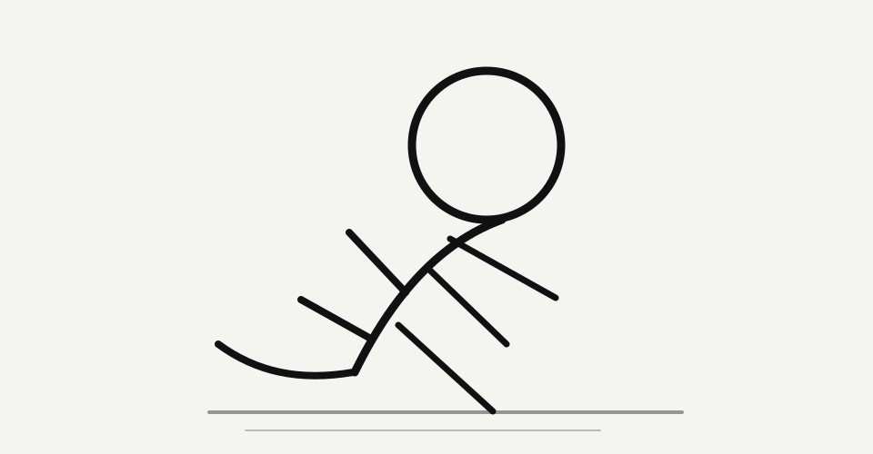

01

AITI / AI Type Indicator
一个带点吐槽感的中文 AI 人格测试，生成主类型、隐藏倾向、雷达画像和适合分享的结果卡。
Open ProductR A I N D R O P
这里承接入口页之后的完整内容：我用 AI 构思的一人产品、正在沉淀的可复用 Skills、以及关于构建和表达的 Notes。
↗ See recent updatesAI-assisted product ideas, prototypes, and public build notes from one person trying to ship useful things.
R E U S A B L E S Y S T E M S
我正在沉淀的视觉生成工作流：像素海报负责温度，体素世界负责搭建感，策略咨询封面负责把复杂主题压成高级、克制、能执行的一张图。

Cozy Pixel Poster System把一个主题拆成标题、场景、道具和情绪，再生成像游戏封面一样温暖的 2D 像素海报。
 Voxel World Poster System
Voxel World Poster System
把标题变成可以走进去的方块结构，用体素世界表达 AI、创作、发布和搭建感。

Strategy Cover Prompt System把商业主题、文章标题、报告/PPT/公众号封面需求，转成克制、高级、可执行的策略咨询风生图提示词。
N O T E S
Deep dives on AI workflow, one-person products, and shipping ideas fast.

不好用的可能不是 AI，而是它还没接住真正的问题。把目标、背景和冲突讲清楚，工具才开始中用。
Read More Post
真正有价值的 AI 协作，不是把话聊漂亮，而是把想法变成能打开、能保存、能迭代的工件。
Read More Post真正难的不是让 AI 写出来，而是判断什么内容像自己、什么答案真的有用。
Read More Post
一套从聊天窗口、代码仓库、网站和社交媒体 到真实反馈的个人构建路线。
Read More Post
AI 正在压缩技能差距，也在奖励更快公开学习的人。
Read More PostA B O U T M E
Just a builder obsessed with shipping ideas.
I’m building a public lab for AI-native workflows, one-person products, and fast validation. This site is where I turn vague ideas into pages people can visit, submit to, and react to.
Previously, I would let ideas get stuck in OPC and RS and “I’ll do it later.” Now I use Codex, Claude code, and PCL'API(sidekick) to ship smaller experiments faster.
For those wondering, I’m still shaping the real story and offers here. For now, follow the notes, read the posts, and watch the experiments become useful systems.